이상하게도 교육정책관련 피해본다 생각하면 가만 못있던 대치동 아줌마들이 조용했던 이유가 이거인가?
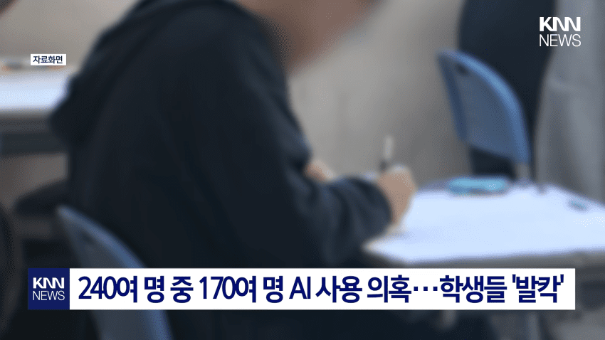
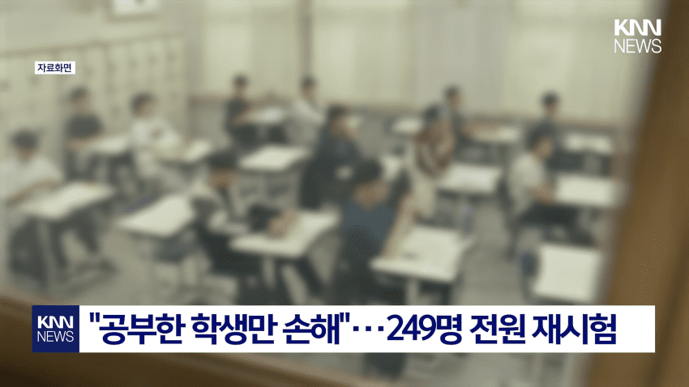
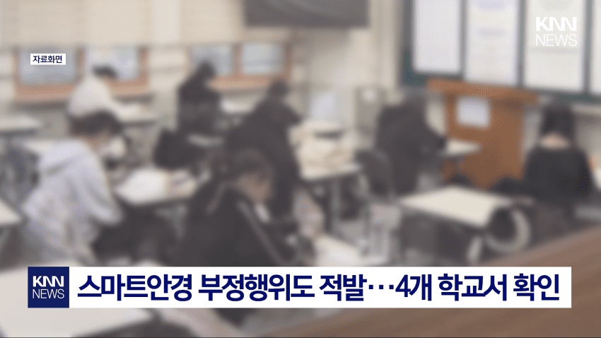
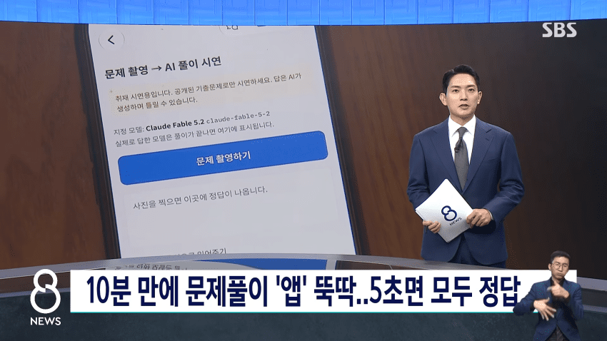
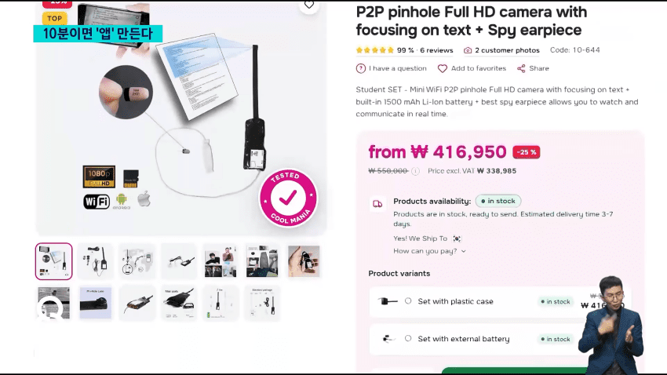
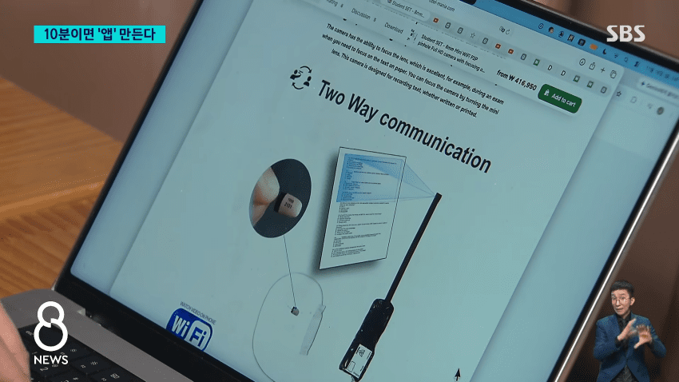
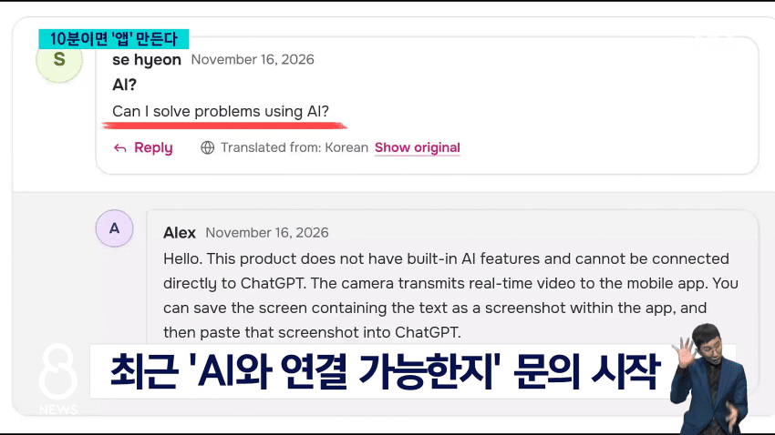
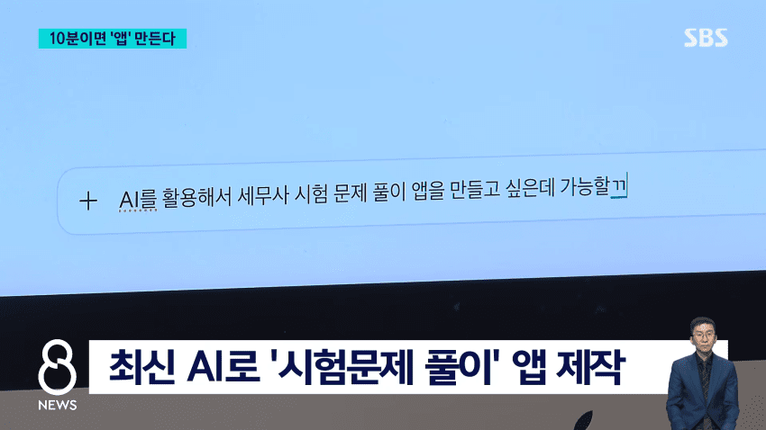
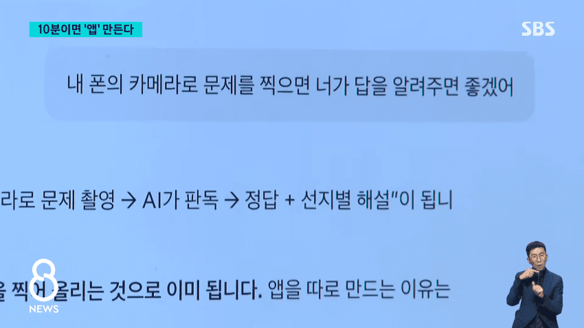
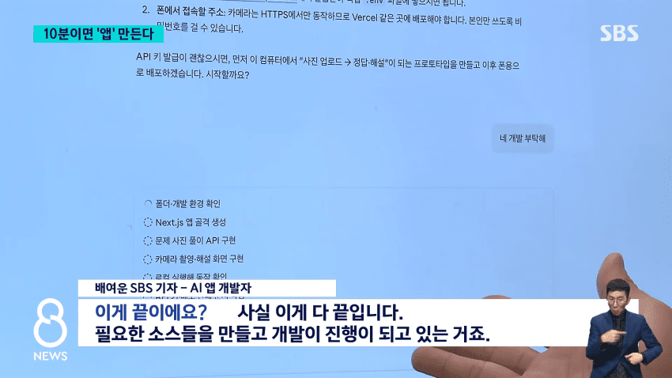
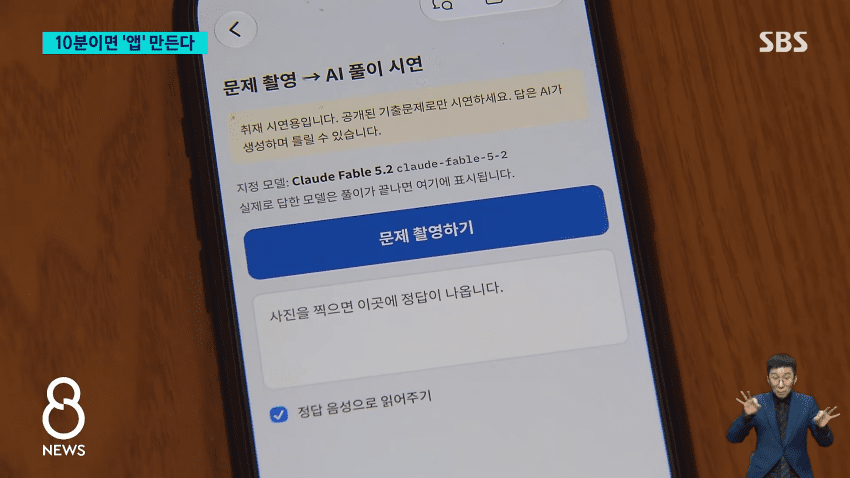
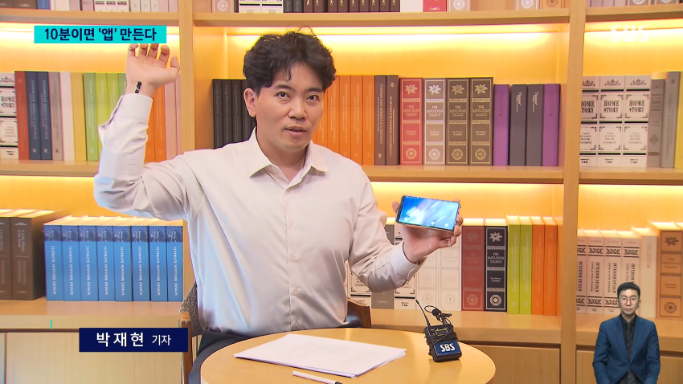
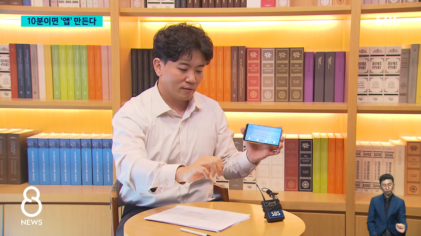
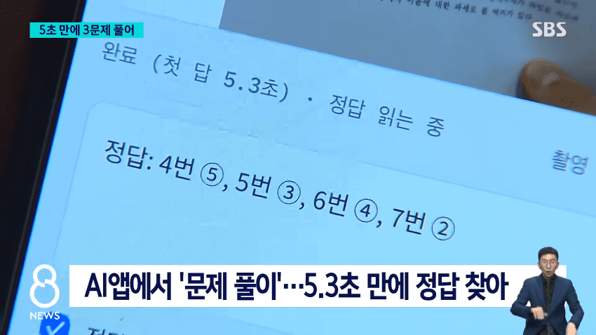
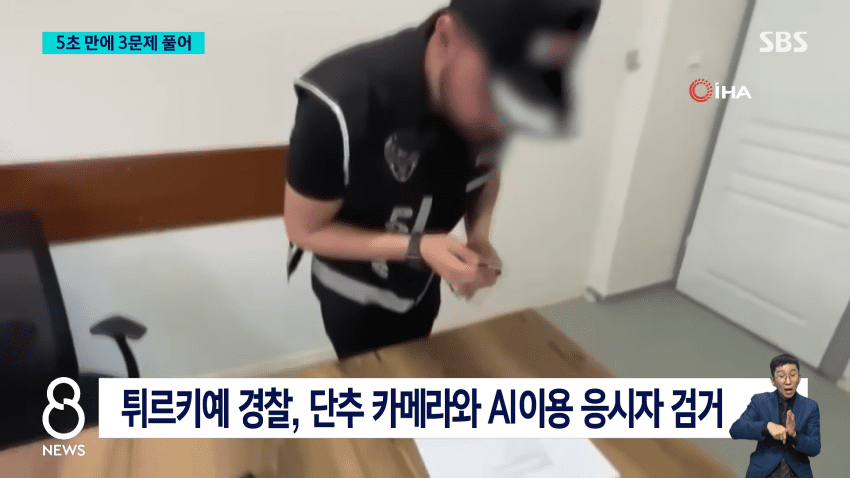
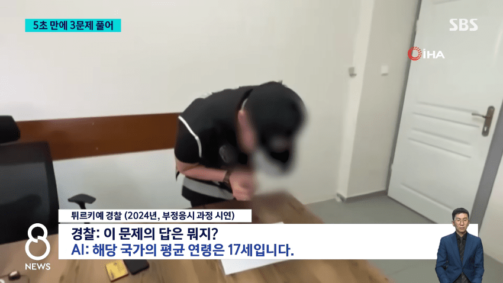
댓글
수집 당시 댓글 93개
ㅇㅇ · 11.20 20:57:05
· ㅇㅇ · 11.22 16:29:22
ㅇㅇ · 11.20 20:57:36
· ㅇㅇ · 11.20 21:02:41
· ㅇㅇ · 11.22 07:44:10
· ㅇㅇ · 11.22 09:45:57
· ㅇㅇ · 11.22 13:10:57
Bluearchive · 11.20 21:01:02
ㅇㅇ · 11.20 21:02:11
· ㅇㅇ · 11.22 09:46:38
부엉냥이 · 11.20 21:02:14
· ㅇㅇ · 11.22 09:47:12
봇치쟝 · 11.22 07:41:21
· 순수비난 · 11.22 07:46:08
ㅇㅇ · 11.22 07:45:00
순수비난 · 11.22 07:45:19
ㅇㅇ · 11.22 07:48:40
· ㅇㅇ · 11.22 09:47:54
ㅇㅇ · 11.22 07:48:44
andrey_santos · 11.22 07:49:53
ㅇㅇ · 11.22 07:52:55
ㅇㅇ · 11.22 07:53:22
· ㅇㅇ · 11.22 09:48:42
· ㅇㅇ · 11.22 10:09:15
ㅇㅇ · 11.22 07:55:39
· ㅇㅇ · 11.22 07:57:36
· 무적반수생 · 11.22 08:07:11
ㅇㅇ · 11.22 07:58:11
히이잉 · 11.22 07:59:07
ㅇㅇ · 11.22 08:02:16
· ㅇㅇ · 11.22 08:09:57
· ㅇㅇ · 11.22 08:23:22
ㅇㅇ · 11.22 08:14:05
· ㅇㅇ · 11.22 09:49:20
ㅇㅇ · 11.22 08:15:08
ㅇㅇ · 11.22 08:20:56
ㅇㅇ · 11.22 08:23:12
ANda · 11.22 08:32:11
· ANda · 11.22 08:35:30
· ㅇㅇ · 11.22 09:34:26
· ㅇㅇ · 11.22 09:49:54
1542 · 11.22 08:34:26
ㅇㅇ · 11.22 08:35:28
히이잉 · 11.22 08:37:08
ㅇㅇ · 11.22 08:37:51
· ㅇㅇ · 11.22 09:34:59
· ㅇㅇ · 11.22 09:50:17
· ㅇㅇ · 11.22 09:50:55
ㅇㅇ · 11.22 08:38:37
ㅇㅇ · 11.22 08:53:06
ㅇㅇ · 11.22 08:54:55
ㅇㅇ · 11.22 09:21:57
히이잉 · 11.22 09:33:09
ㅇㅇ · 11.22 09:35:14
· ㅇㅇ · 11.22 11:52:29
ㅇㅇ · 11.22 09:36:37
ㅇㅇ · 11.22 09:40:13
ㅇㅇ · 11.22 09:52:00
ㅇㅇ · 11.22 09:52:23
노은지 · 11.22 09:58:14
ㅇㅇ · 11.22 09:59:42
ㅇㅇ · 11.22 10:12:33
ㅇㅇ · 11.22 10:32:54
ㅇㅇ · 11.22 10:55:25
· ㅇㅇ · 11.22 10:55:54
ㅇㅇ · 11.22 11:37:45
ㅇㅇ · 11.22 11:53:13
ㅇㅇ · 11.22 11:58:29
ㅇㅇ · 11.22 12:11:06
· ㅇㅇ · 11.22 12:28:46
· ㅇㅇ · 11.22 14:52:09
ㅇㅇ · 11.22 12:27:09
· ㅇㅇ · 11.22 17:15:53
ㅇㅇ · 11.22 12:28:07
· ㅇㅇ · 11.22 14:26:22
ㅇㅇ · 11.22 12:39:36
· ㅇㅇ · 11.22 12:39:42
견찰냥이 자수해라
ㅇㅇ · 11.22 12:59:36
Vooqqqqld · 11.22 13:07:25
ㅇㅇ · 11.22 13:54:50
ㅇㅇ · 11.22 13:58:44
ㅇㅇ · 11.22 14:07:58
ㅇㅇ · 11.22 15:13:13
ㅇㅇ · 11.22 15:29:29
ㅇㅇ · 11.22 15:37:49
ㅇㅇ · 11.22 15:47:21
ㅇㅇ · 11.22 16:35:24
ㅇㅇ · 11.22 16:47:12
ㅇㅇ · 11.22 17:44:41
ㅇㅇ · 11.22 17:50:15
ㅇㅇ · 11.22 18:00:12
ㅇㅇ · 11.22 19:12:53
ㅇㅇ · 11.22 19:41:50